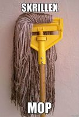
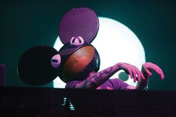
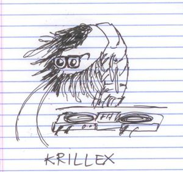
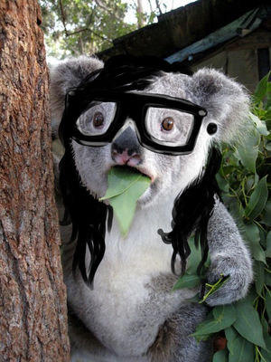
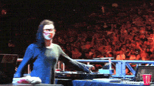
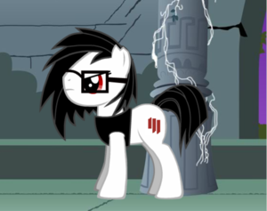

Skrillex
 De: La Frikipedia, la enciclopedia extremadamente seria.
De: La Frikipedia, la enciclopedia extremadamente seria.
| De la serie rarezas del mundo:
|
| Skrillex
|
| 
|
| Una de las representaciones de Escriles. Ideal para fregar el suelo.
|
|
| Cosa que representa
|
Depende del día.
|
| Sirve para
|
Que los tíos se pasen de acera.
|
| ¿Existe?
|
Por supuesto que no.
|
| Trastorno del cerebro
|
Emo Mental
|
| ¿Es comprensible?
|
talvez
|
| Hábitat
|
Entre las malezas de su pelo.
|
| Poder
|
Poner cachondas a las tías, y que los tíos se vuelvan gays.
|
| Tipo de rareza
|
Emo, cani, chica Disney y Hipster
|
| ¿Natural o artificial?
|
Todo natural, nada artificial.
|
| Nivel de frikismo
|
Más que un yonki del WoW
|
| ¿Es abundante?
|
En pantalones y gafas.
|
«"ASFHAF ASHFASF WIEGJIE WIFAIFSHDG OEJOG JOJOJ GUAU GUAU GUAU KASGJS WUF WUF ASDASA"»
~ Sonido rectal que hace Skrillex
Escriles, cómo ahora todos la lo conocen, es un alien, que vino desde el más allá para producir música gay, que esconde un oscuro pasado. Su principal método para hacer su "música" es rayar discos, y aproximadamente 1/1.000.000 de cada disco rayado, sale una canción, que posteriormente utiliza para sacar un EP, que luego otras personas rayarán. Gracias a éste método, ha conseguido hacerse con varios esclavos mentales hits.
Resumen de su vida
 El enemigo principal de nuestra princesa disney.
Infancia
La mayor parte la pasó como cualquier otro chico. Era bastante aficionado a Harry Popotter. Fue entonces cuando se dió cuenta de que era marica y luego, en su décimo primer cumpleaños, al ver que no llegaba su carta para entrar en Hogwarts, se introdujo en un abismo del que no era capaz de salir, y se volvió emo.
Adolescencia
Increíble pero cierto. Hace unos años, un jovencísimo Sonny, fue abducido por su familia de aliens. Un reencuentro duro para todos, pues hacía muchos años que su familia le había abandonado en la tierra, para ofrecerle la oportunidad de vivir mejor. Él, al ver todo aquello, del susto, y de la apariencia de su, "supuesta familia", se desmayó. Luego su abuelo intentó violarlo mientras permanecía ahí tirado, pero se despertó antes de tiempo. Por lo visto era normal que se violaran unos a otros. Luego le borraron la memoria, y le volvieron a enviar a la tierra, sin recordar nada de esto. Pero de vez en cuando tenía pesadillas sobre cómo un alien le sodomizaba brutalmente. Aparte, ciertos días en concreto, justo antes de que le bajara la regla, siempre le salían antenas en la cabeza, se volvía melancólico-emo, se sentaba frente al sofá con todos los peluches que podía, y se dedicaba a ver películas de Disney con 3 cajas de pañuelos al lado, para sonarse los "mocos" cuando "lloraba".
Actualidad
Escriles intenta ser más famoso que su mentor, Deadmau5, y posiblemente lo consiga. ¿Por qué? Porque usa sus poderes alienígenas para crear un ejército de fans rapados (nazis), para acabar con la competencia, en especial, con David Jeta. Más abajo, os explicaré las verdaderas intenciones más detalladamente, y cómo lo hace.
Está saliendo con una chica (sí, he dicho una chica... Una mujer, aparentemente...). Su nombre es Ellie Goulding. Es de la misma altura que Escriles. Rubia de bote chocho morenote, también rapada por el mismo lado que su macho cabrío, y más fea mona que el Fary chupando limones un pony volando entre golosinas. El adjetivo perfecto es "Kawaii" (que las fans de Escriles han inventado en especial por la monosidad al estilo My Little Pony que tiene la jodía caracaballo). Pero bueno... Ha este paso, ya lo han dejado, ahora cada uno por su lado... Ellie siendo taaaan puta maravillosa como es... Ha encontrado otro amor. Escrilles, por el contrario, ha encontrado el amor... Por la cocina. También ha conseguido una popularidad bastante grande entre sus putas locazas (es decir, sus adorados fans) que consiste en odiarle al máximo por tardar siglos en sacar un solo tema completo, que lleva años pinchando en las fiestas pero que no tiene huevos para sacarlo.
Dead Mou Cinco
Tuvo una larga relación con zorrita bien conejita y se largo con esta, otros afirman que fue brutalmente asesinado por una pata voladora y los más aburridos que murió de camino a la tienda. Sin embargo, se descubrió que al final se largo con la conejita. Actualmente los fans de Skrillex consideran al RatonMuerto5 el mayor enemigo que hay en el mundo del dubster y debe ser erradicado.
Verdaderos propósitos
 Escriles intentando el Apocalipsis Skrill-zombi.
Qué intenta
Os pondré una lista de todas las intenciones que tiene, absorbiendo el cerebro de todas las fans:
- Que odiéis a toda la competencia.
- Que os encante sus colegas del talego
aunque os parezcan todos una puta mierda.
- Que le améis más que a Jesucristo, y tengáis pensamientos lascivos 28 horas al día con él y cualquiera de sus compañeros sentimentales.
- Que reviváis una y otra vez la noche en la que concibió a su hija.
- Apoderarse de todo el mundo musical haciendo colabos con todos los músicos comerciales o medianamente comerciales para hacerse aún más famoso y luego gastarse el dinero en Salmones para "Dropear el salmón" (si no lo entiendes, no es culpa mía).
- También "colarse" en todos los "dibujos" famosos que rulan por "internes". ¿Por qué? Por lo mismo de antes... Para hacerse más famoso. Para que la gente se ría de su cara que imita tranquilamente una "paella" auténtica de Valencia. (Lo peor de todo es que algún día confundan a su "mini-yo" gamba, y le hagan junto a la paella y alguien... Ah, bueno, si eso ocurriese, quien se lo comiera, se convertiría en Escrilles, y de aquí al apocalipsis Skrill-zombi). También para que allá dónde vayáis, le veáis y le recordéis.
 Fruto de Skrillex en una de sus orgías con Koalas
Cómo lo hace
- Enviando unas ondas radioactivas a través de su música súper hiper mega
gay rEsHuLoOnAh, que hace que todos os quedéis mirando a la pantalla del ordenador, pero en realidad lo que veis sois a vosotros mismos teniendo sexo con Escriles.
- Haciéndose esperar. Demasiado evidente este punto. Es una manera de hacer que cada vez babeéis más por él. Saca un pequeño pedacito de un tema que tiene terminado hace 235 años, que hace 234 años y medio que os lo medio enseñó, que casi hace que os corrieseis en la pantalla, pero aún así esperáis como retrasados, y en el momento que sale... Os corréis del todo; o
/u os parece una puta mierda no os sorprende, como pasa en la mayoría de los casos. ¡PERO NO IMPORTA! Seguiréis haciendo lo mismo una y otra vez (él también).
- A través de los Koalas. Un día Escriles fue a un zoológico... Y le presentaron a una koala. Se hicieron fotos... Y se enamoraronm Mantenieron una gran relación, pero en secreto. A él le podrían meter en la cárcel por ser un zoofílico... DiedMau69, lo sabía. Koala jugaba con su minino... Eran dos parejas muy especiales... Y qué grandes recuerdos quedan en sus mentes... Pero a pesar de intentar tenerlo tan en secreto, cosa que consiguieron... La Koala se quedó embarazada. Al principio todo normal... Escriles pensó que es imposible que un humano deje embarazado a un animal... Así que se enfadó con la Koala, porque decía que ella se había acostado con otro koala... Ella triste... Se quedó arrinconada en una esquina... Llorando, hasta el día del parto. Cuáles fueron las sorpresas de todos, cuando el pequeño koalita... Se parecía extrañamente a Escriles, PERO nadie se imaginó nada... Así que él ni siquiera sabe que tiene un hijo koala, puesto a que nunca volvió a aquél lugar, ante la cantidad de recuerdos que aquello le traía, y el pensar que ya nada volvería a ser cómo antes... La madre Koala murió. De pena. Y sin quererlo, cada vez que alguien va al zoológico, y ve a aquél precioso koala, de forma hiptonizante... Gritan, corren hacia sus casas... Para buscar en Yutuf a Skrollex. Sí. Skrollex, y raparse un lado de la cabeza, y volverse hipster.
Vida como chef
Skrillexef, en todo su resplendor (se dice que por su culpa McDonals hace mierda más mierdosa que antes).
Un día, en uno de sus "conciertos", quiso sorprender a la peña. ¿Y cómo lo hizo? ¡COCINANDO PARA TODOS!
Aparte de eso, a pesar de ser uno de los mejores chefs del mundo mundial por los cojones de un niggaz. Ganó un premio único, que sólo tiene él: El premio al mejor chef de todo la historia, y del mundo mundial. Para que sepáis de qué va la cosa, os hago un resumen de los ingredientes usados en cada especialidad.
Pizzas
- Harina: Un tronco de roble pasado por la batidora, con un poco de aceite (grasa de su pelo que hace 32853 años que no lava), y un poco de polvo mágico ((
droja)).
- Salsa de tomate: Sangre de vagabundo, Ketchup pasado, y sudor.
- Queso: Semen pasteurizado después de la fermentación y leche de teta de Carmen de Mairena
Comida Mexicana
- Frijoles: Caquitas de conejo, bañados en una pasta, que se compone de hiervas silvestres y venenosas del campo (como las ortigas, por ejemplo), con un poco de pis de burra.
- Tacos: Tortas de harina, como las de las pizzas, rellenas de hojas de ortigas, con un fruto rojo (que podría pasar por tomate, pero no lo es), que es totalmente venenoso y también es silvestre, setas venenosas, un poco de guindilla, y carne de rata de laboratorio.
Barbacoa
- Costillas de perro.
- Hamburguesas de gato con un ligero aroma a pescado pasado.
- Cerebro humano, de las víctimas asesinadas por Owsla.
Todas estas, obviamente, impregnadas en salsa barbacoa (parecida a la salsa de tomate usada en las pizzas, pero con arena y batido de chocolate, para espesarlo un poco y darle más sabor.
Kebabs
- Carne de conejo de cloaca.
- Salsa: Igual que se rumorea que está echa con semen... No es un rumor, es real.
DULCES
No diré nada al respecto.
Escriles amasando (¿el qué?)
Owsla
Es la tapadera que tiene Escriles para vender droja, pero lo tiene como una discográfica que ha montado con sus perros, para reunir a los mejores camellos. Graban música, sí... Para la gente con deficiencia mental. El logo (que podéis contemplar a vuestra izquierda), es de los Illuminati (obviamente, estoy incluye a TODOS los miembros de esta mojonería). Aparte de eso... Se puede ver que tiene forma de un cerdo de espaldas. ¿Qué nos querrán decir con eso? En fin... Veamos quienes son los camellos:
Primeros miembros
- Dillon Francis: Ni
puta idea de quién es. Nadie le conoce. Pero es obvio que tiene a su clientela ya. Y eso es algo que beneficia a todos.
- Kill the Noise: Éstos son más conocidos entre la manada, pues han llegado a colaborar juntos alguna que otra vez (que por cierto... Todas las colabos son peores temas que una canción de Justina Biber).
- Koan Sound: Éstos han hecho buenos temas (entre los 27596 que tienen, sólo 2 o 3 son bestiales, los otros... Son temas que producieron para Hannah Montana)
- Nick Thayer: Otro vagabundo que no conoce ni su
puta madre, al que un día vio tirado en la calle y le dijo: "IllOoh ShUrMaNoO, tU tE KiEe vEnIi a vEnDeE dRoJaA?"
 Escriles bajo los efectos de la droja que vende en Owsla
- Porter Robinson: En realidad es Harry Potter camuflao, a los que "endroja" con la mirada. Su música tampoco vale un duro.
- The M Machine: Es la máquina que cuenta el dinero y produce la droja. Supongo que también hará música... Pero sólo es una suposición.
- SKREAM: Éstos son los sicarios. "iLLoO? tUu nOh vAa pAgAa? pO0 pUmBaAh".
- Skrillex: El primo lejano de Escriles, Mitch Connor. Le puso al mando de todo porque es de fiar... Bueno... Tal vez lo sea... Bueno, si él lo dice... (Pero es un secreto, ¿eh? Que quede entre nosotros... Éste no es de fiar... Porque la mayoría de las veces se queda el dinero de los yonkis, o simplemente dice que ha vendido más droja de la que vende en realidad, y se la queda para él solito, y luego manda a los SKREAM a matar al notas que dice que no le ha pagado...)
- Zedd: Más conocido como Zepp. A éste ya le conocíamos. En realidad sólo está aquí por su habilidad a hacer unas posturas realmente increíbles cuando tiene sexo con Escriles. Vamos, resumiendo, que le tiene aquí para
follar hacerle masajes. (Calidad de música: Nula.)
Nuevos miembros
Son secundarios. Quiero decir... Aparte de que llegaron después, no se dedican a vender droga, si no a mejorarla de una forma externa. Todas las funciones de éstos, requiere que estés bajo los efectos de la droja.
- Birdy nam nam: La música de "estos" seres extraños se compone de unas ligeras punzadas de subnormalidad en sus temas, que sólo eres capaz de entender si te drojas.
- Dogblood: Estos ponen a cuatro patas a los miembros antiguos del equipo, y los violan hasta sangrar. De ahí el nombre. Con la famosa droja owslarniana, hace que el dolor sea mágico.
- Dream: Este no sirve pa' nah. Es negro.
- Hundred Waters: Agua es incontable.
- Jack Beats: No.
- Sub Focus: Ayuda a estimular con una series de luces que le salen del micro-pene.
Curiosidades varias
 Escrillex después de
ser azotada convertirse en caballo.
Curiosidades sobre él
- Tiene el poder de decidir cuándo quiere tener pene, o vagina. Esto explica que hace 6 años, se quedara embarazado de una preciosa niña.
- Ahora Escriles padece un trastorno mental que le hace perder sólo media parte del pelo de su cabeza. Mientras que la otra crece sin cesar.
- En realidad... Su madre se acostó con un gnomo del jardín del abuelo, que es tío de la madre, de la sobrina, de su prima Antonia (aquella que estuvo saliendo un día con tu hermano... Sí, ese), y se quedó embarazada. Esto sólo explica la baja estatura de Escriles.
- Nunca, nunca, y digo nunca, se lava el pelo. No conoce la existencia del "champú".
- Puede transformarse en cualquier ser animado u objeto inanimado. ¿Por qué? Porque quiere saber si eres lo suficiente fan cómo para hacerle un altar, rezar todos los días en posición a su ojo derecho (si no estás en la posición correcta, el mismo viene, te sorprende, y te mete un palo por culo, y te pone derecho.)
- Skrotex era emo
sexual
- Tiene un don para la cocina (no quisiera saber con qué clase de comida cocina). Normalmente suele mostrar su talento culinario cuando actúa en garitos de
mala monta alto prestigio al que no va ni su madre adoptiva.
Curiosidades sobre su hija
- Su hija es producto de una noche loca junto a DiedMau5
estrellas, Zepp, The Roadfrog y su queridísimo Fuck me. (Uno de los momentos en los que, obviamente, decidió tener vagina, y en vez de tener cuatrillizos, un esperma de cada uno de ellos, se fusionaron en uno gracias al poder alien de Escriles)
- Cuando su hija creció, y fue por primera vez a Londres, en una estación de trenes vio el andén 9¾, y sin pensarlo, cogió el carrito de un vagabundo que recogía chatarra para poder pagarse los porros, puso a su hija al mando del carro, y la estampó contra el muro. Tal fue el golpe, que él mismo, sin sufrir ningún daño, se desmayó y creyó que su hija ya estaba de camino a Hogwarts cuando tenía sólo 4 años.
- Lo que en realidad pasó fue que los servicios sociales se llevaron a su hija a un hospital secreto del gobierno inglés, ruso, canadiense, australiano y estadounidense, dónde le sometían a pruebas cómo las que el antiguo Hitler sometía a los judíos. Con el paso de los años, ésto hizo que la niña adquiriera varios poderes sobrenaturales.
- Ésta, dos años después, se escapó. Su padre, quien creía que jamás volvería a verla... Se la encuentra en un casting de niñas pequeñas para rodar su nuevo vídeo "First
coito of the year". En él se ve cómo ésta, con sus nuevos poderes, se venga de su magnífico padre. Aunque sólo se ve a otro hombre, pederasta que intenta abusar de ella. Esto es sólo un montaje para que la gente no se alarmara.
- Su hija es conocida como la
puta zorra Emo Choni, la cual expande su mierda por internet y viola a seres del espacio exterior.
Curiosidades sobre su mierda música
- Su instrumento favorito es la
licuadora computadora.
- Para que su pseudo-música sea "buena onda" utiliza una gaita hecha con tripa de la versión cyborg de Dolly la oveja.
- Era cantante emo, pero lo operaron de la garganta debido a que para gritar tanto, se la tenía que mamar aun negro que le media 42", y poe otro lado (el culo) se metía plátanos, de ese modo mantenía su tono tan
marica peculiar.
- cantó junto a manolo escobar acompañados por paco de lucía.
Autor(es):
- Fordus
- Cobretti124
- MilhouseSimpson
- Frikisexigirl!!!
- Shadowmura
- DoctorOctaMutharFukinGonapus
- Likan003
- CarlosArdilaTroll
- Mascachocle6000
- Jimanri
Frikipedia 2005-2016, Licencia
GFDL 1.2 - Extraído por FrikiLeaks